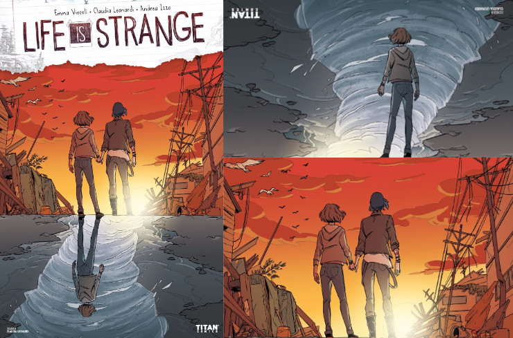
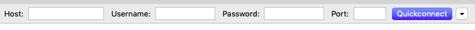
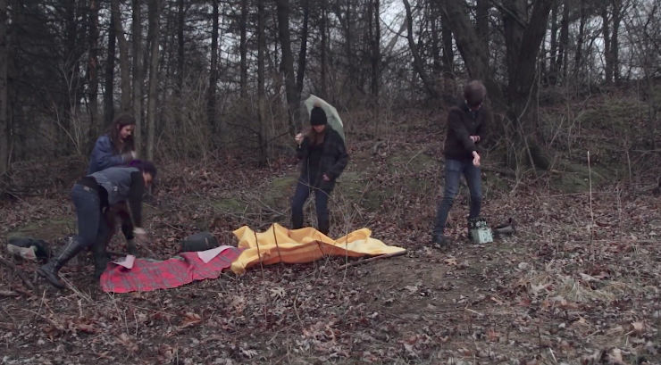

Recent Articles
-
Life is Strange comic book vol. 2 (Dust #2)

Yesterday I wrote a review of the first issue of Life is Strange comic book. Today I faced its continuation in which Max and Chloe return to Arcadia Bay a year after the storm that changed their lives forever.
-
Life is Strange comic book vol. 1 (Dust #1)
Life is Strange comic book is a continuation of the story of Max and Chloe, taking place a year after the events depicted in the eponymous computer game. Max and Chloe live in Seattle and while it could appear that the worst is over and two girls are finally safe, a new, sudden danger emerges, threatening everything Max achieved since that memorable week in October.
-
Life is Strange art exchange [closed]
As a part of the #WeAreLiS initiative on Twitter we are organising the art exchange between Life is Strange fans. The exchange allows fans from around the world to share their collections of fan art and see collections prepared by others.
-
Play Dead Movie
Play Dead is an independent horror movie depicting the story of a dysfunctional family with a peculiar and very disturbing hobby.
-
Arcadia Bay sunset

-
Plans for 2019
2018 was a busy year. I’ve been participating in many projects that ate away huge portions of my time, however they forced me to improve my time management and productivity. I’m starting this year with new energy and ideas, carefully planning a few major goals to achieve in 2019.
-
I saved Chloe for the first time

Last Summer I played Life is Strange for the first time. It was incredibly immersive experience and it changed me forever.
-
New version of the website
As you might have noticed, my website has been updated with a new structure and appearance. I wanted it to have a clean, minimalistic design with easy navigation.
-
Ulysses becomes a subscription-based app
A vivid discussion sprang up on the internet three days ago when The Soulmen, developers of Ulysses, announced that their popular text editor for macOS and iOS had become a subscription-based app. This rather unanticipated step has rendered the group of Ulysses fans bipolar. Subscription lovers claim that the application is much more affordable via a low monthly fee than a big payment upfront, while their opponents argue that it practically forces them to pay for the software in perpetuity, in order to be able to preserve its functionality. As always in similar cases, the truth lies somewhere in the middle and both sides have some valid points in the discussion.
-
Write! - new multi-platform writing software

The market of writing software is full of powerful, innovative or intuitive text editors and word processors that have been widely used by a large public for several years. To make a visible appearance new developer must offer an outstanding application with supreme features that would be attractive for customers. Write!1 app is the new player in the game, boldly advertised as the only writing app you need to create, edit and organise texts. Is this brag justified? I’ve been using Write! as my primary writing app for seven weeks to get the answer to this question.
Subscribe via RSS